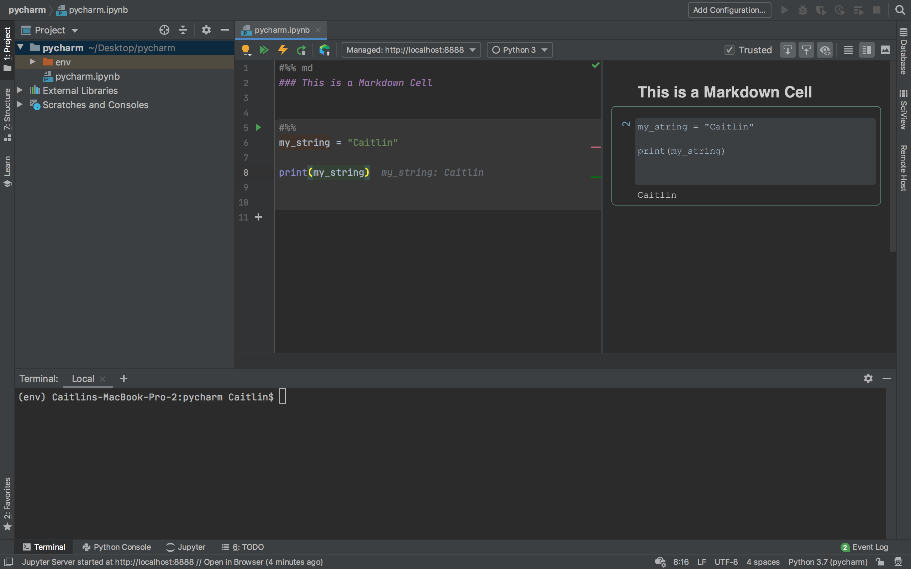

Jupyter notebooks in PyCharm

Today we’re going on a Python adventure using Jupyter notebooks and PyCharm! First, let’s talk about what these are. Jupyter Notebook is a web application where you can create interactive coding documents, supporting many programming languages including both Python and R as well as Markdown. PyCharm is an amazing IDE (interactive development environment) for Python that has tools and plugins to help you code more efficiently. You can develop your code both locally and remotely using PyCharm. First, let’s get set up!
Getting started with PyCharm
Install PyCharm.I highly recommend installing PyCharm Professional because you get more features like SciView that are awesome for data science. Plus PyCharm Professional is free for students!
Install Python if you don’t already have it - you’ll need an interpreter in order to use PyCharm! Be aware that Python 2 and Python 3 are different in terms of syntax - don’t worry, you can load either version in PyCharm when you start a new project. If this is your first time developing in Python, I recommend going with the latest version 3.8.3.
Create a new project in PyCharm and select your local Python interpreter. Here, I created a new project called ‘pycharm’ in a directory on my desktop and selected Python 3.7 as my interpreter.
Install Jupyter by selecting PyCharm >> Preferences >> Project Interpreter, then click the “+” button to add new packages.

Then type ‘jupyter’ and select jupyter from the packages list. Then click the ‘Install Package’ button at the bottom of the window.

Create a new Jupyter notebook by navigating to File >> New… and selecting ‘Jupyter Notebook’. Alternatively, if you just want to create a Python script you can select ‘Python File’. Here, I created a new notebook called pycharm.ipynb.

Let’s start editing our notebook by adding a Markdown cell. In the editor next to the ‘#%’, add ‘md’ to set the cell type to Markdown. Then use Markdown formatting, such as ‘### Header’ like in my example here. Notice that the right side panel displays a preview of your notebook.

Now let’s add a coding cell. Click the ‘+’ button just below the Markdown cell to add a new cell. Add your code and click the green arrow to run the code in the cell.
Here I created and printed a variable called my_string.

Let’s check out a cool feature of PyCharm Scientific View. Add the following to a code cell and run it:
import pandas as pd
#read in data from my github repo
data = pd.read_csv("https://raw.githubusercontent.com/CaitlinCasar/Casar2020_DeMMO_MineralHostedBiofilms/master/orig_data/site_geochem.csv")
data.head()Next, open your Jupyter tab at the bottom of your PyCharm window, click on the variables tab, and right click on the new variable you just created called ‘data’. Select ‘View as Dataframe’, then click on the ‘SciView’ tab on the right panel.

This is a great feature for viewing your stored variables. You can view both dataframes and arrays with SciView.

Let’s try launching this notebook in our browser. Click on the text at the bottom of your PyCharm window that says “Jupyter Server started at http://localhost:8888// Open in Browser”. You should see an Event Log window pop up in the bottom right panel. Click on “Open in Browser” to launch your notebook in your web browser.

You should now see something like this in your browser:

Click on the notebook to run your code in the browser window. You can run cells by clicking the Run button in the top tool bar, or by clicking Ctrl + Enter.

Sync files with a remote server
Let’s say you want to sync files on a remote server. You’ll need to set up your file transfer protocol. Select Tools >> Deployment >> Browse Remote Host. Then select your protocol - here I chose SFTP (secure file transfer protocol).

Next, configure your connection to the remote host by adding your IP address and log in credentials. Optionally, set your root path to the path on the remote server where you want to access files.

Click on the Mapping tab and set your local path to your project directory in PyCharm. Set the deployment path to the directory on the remote server where you want to access or upload files.

Sync your local directory with the remote directory by right-clicking on your project in the left panel, then select Deployment >> Sync with Deployed To…
Then click the green double arrow button “Synchronize All” to sync your files. You can use the ‘Remote Host’ tab on the right panel to view your remote file tree.
Run a remote Jupyter server kernel
If you want to run an interactive Jupyter notebook on a remote server in PyCharm, you’ll need to set up your Jupyter server configuration and remote Python interpreter.
In the terminal, SSH into your remote server, navigate to the directory where your data is, then launch a Jupyter notebook.

Navigate to the directory where your data is located. Then launch a jupyter notebook by running the following:
#replace port number with whatever port you want
jupyter notebook --port=8899 --no-browserThis will return a url and token, similar to:
https://my-notebook/tree/?token=abcdef...Copy this entire url and token. Make sure you copy it all from one line - I have to make my terminal full screen for this. Otherwise you might get a weird line break and your url/token might not work.
Open a new Jupyter notebook file and select ‘Configure jupyter server…’.

Paste your url and token in the field for ‘Configured Server’. Then click ‘Apply’.

You should now be able to access data on the remote server in your Jupyter notebook. Here, I cloned my repo on the remote server, and I’m accessing a csv file with the pandas library.
If you want to use an interpreter on the remote server, you can figure the interpreter by naviating to Pycharm >> Preferences >> Project Interpreter…, then select the wheel button next to your current interpreter and select ‘Add…’. Then select ‘SSH interpreter’ and choose ‘Existing server configuration’. From the dropdown menu, select the SSH configuration that you set up in step 2 of the ‘Sync files with a remote server’ above.

Note:Unfortunately, you cannot view your variables while using a remote Jupyter server kernel as documented here.
Congrats on developing in Jupyter Notebooks and PyCharm! I hope you enjoyed this tutorial, feel free to comment below with any comments/questions! üòé